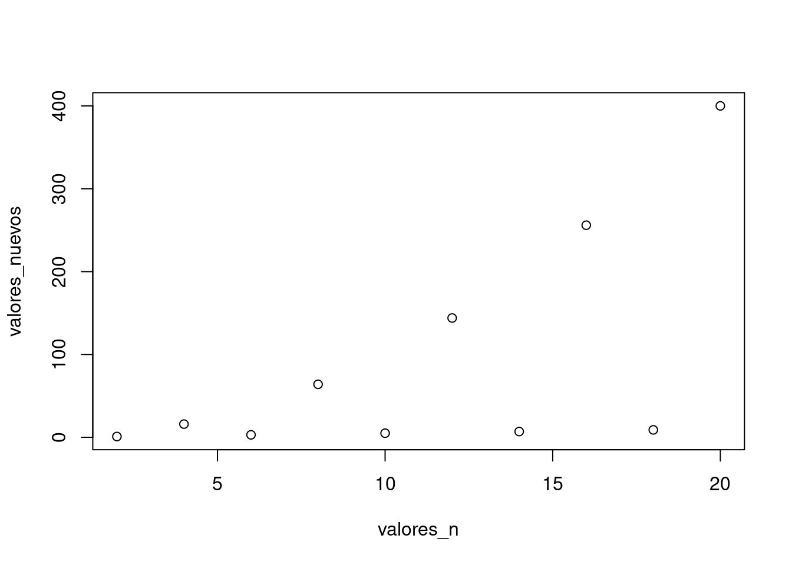
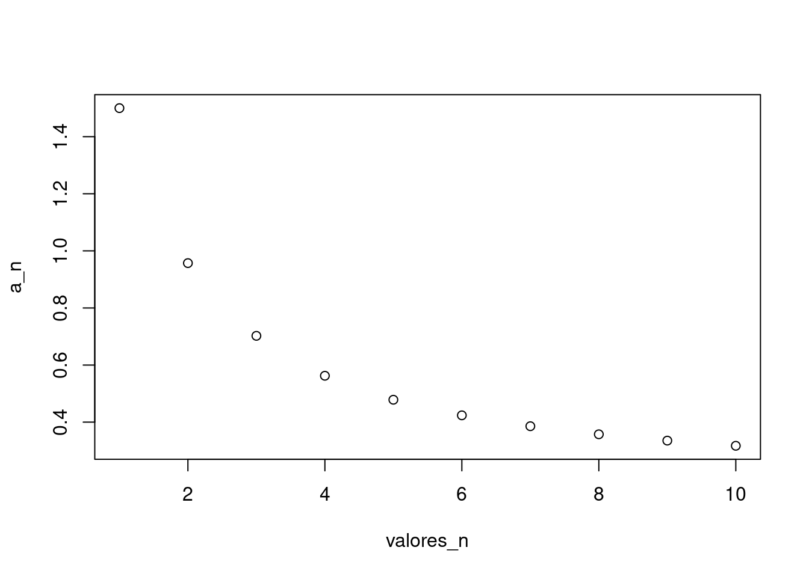
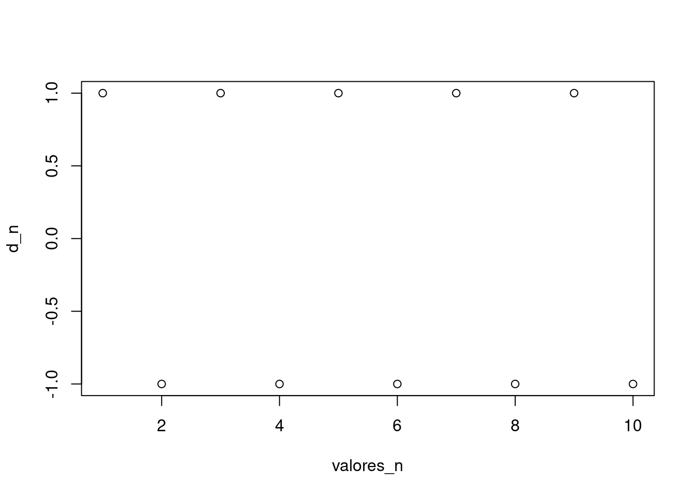
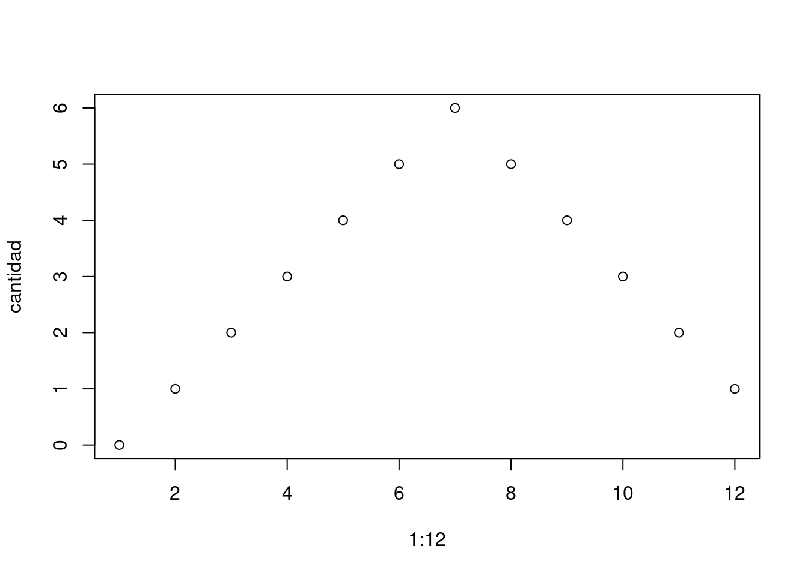
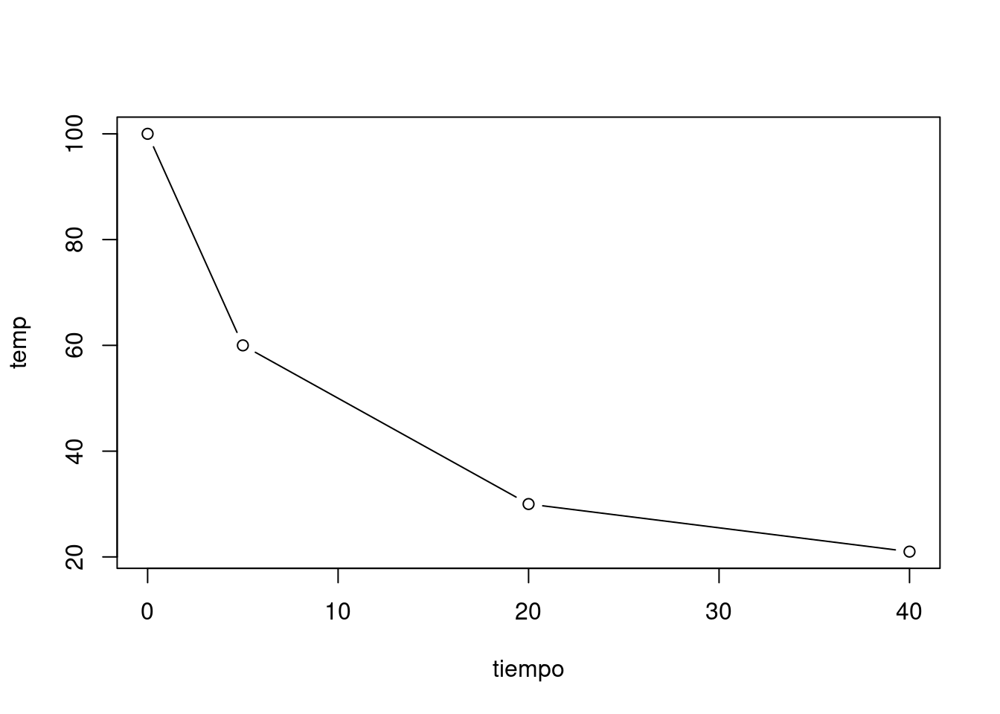
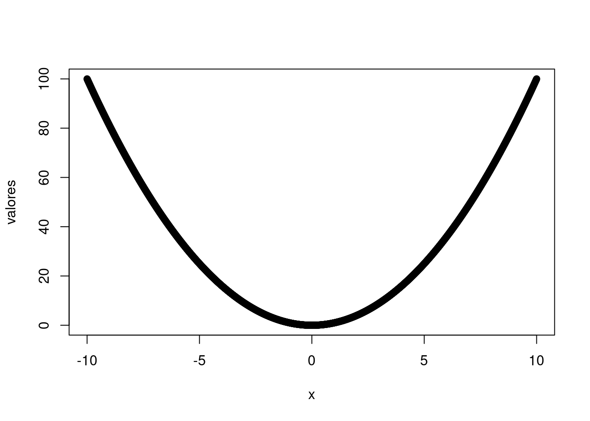
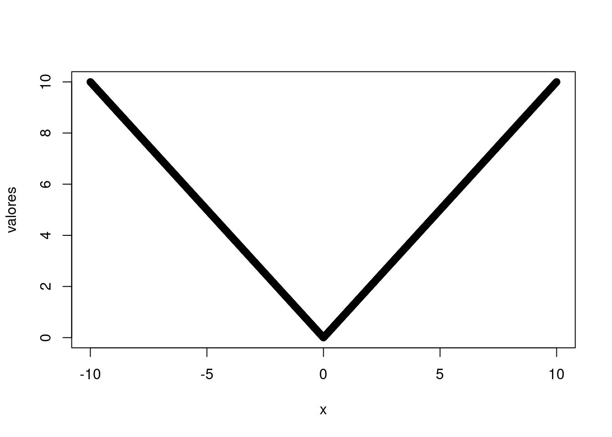
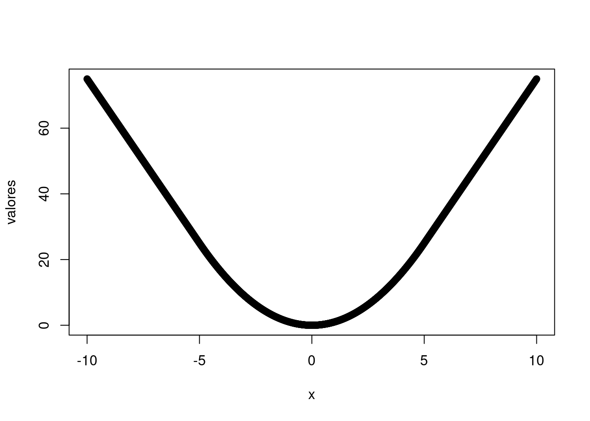
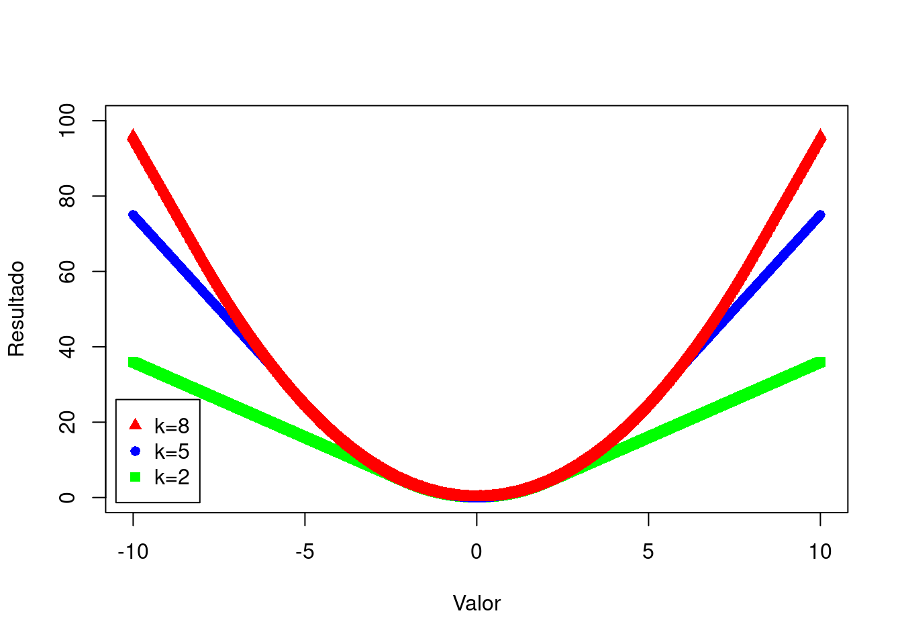

Clase 2 Estructuras de control - Gráficos
Esta es la guía de ejercicios correspondiente a la clase 02 (ver diapositivas). Deberá entregar al menos todos los ejercicios indicados con una estrella (\(\bigstar\)) en un archivo .R. Igualmente se recomienda realizar todos los ejercicios para ganar mayor habilidad en programación. Cada ejercicio debe estar resuelto entre comentarios que indique secciones dentro del archivo.
Algunos de los temas necesarios para resolver esta guía no fueron incluidos en la teórica, muchos se encuentran en este documento, mientras que otros deberán ser investigados (por ejemplo, buscando en internet). El ejercicio de buscar cómo abordar/resolver problemas en internet es casi tan importante como poder resolverlos.
Además de escribir los programas pedidos deberán probarlos y dejar constancia de las pruebas realizadas, además de explicitar si anduvo como era esperado o no.
2.1 Condicionales
Completar el siguiente programa de manera tal que el valor de la variable
a_es_mas_grandeseaTRUEunicamente cuando la variableaes más grande quebyFALSEen caso contrario.## [1] TRUE\(\bigstar\) Completar el siguiente programa de manera tal que el valor de
nombre_mas_grandesea el nombre de la variable cuyo valor es más grande entreayb, en caso de ser iguales devolver cualquiera (puede ser siempre el mismo).a <- 3 b <- 2 if (a >= b) { nombre_mas_grande <- "a" } else { nombre_mas_grande <- "b" } nombre_mas_grande## [1] "a"Modificar el programa anterior para que en caso de que sean iguales devuelva
"iguales"if (COMPLETAR) { nombre_mas_grande <- COMPLETAR } else { if (COMPLETAR) { COMPLETAR } else { COMPLETAR } }a <- 3 b <- 3 if (a > b) { nombre_mas_grande <- "a" } else { if (a < b) { nombre_mas_grande <- "b" } else { nombre_mas_grande <- "iguales" } } nombre_mas_grande## [1] "iguales"\(\bigstar\) Escribir un programa que dado el valor guardado en la variable
q, si dicho valor no es múltiplo de 3, entonces lo múltiplique por 3. En caso de serlo no debe modificarse.## [1] 15\(\bigstar\) Completar el programa para que calcule un paso de la función de Collatz. Recordar que dice:
\[ collatz(n) = \begin{cases} n/2 &\mbox{si n es par} \\ (3n + 1) & \mbox{si no } \end{cases} \]
## [1] 46\(\bigstar\) Dados 2 vectores de números
v1yv2concatenarlos en una variable llamadaresen el siguiente orden:- si el primer elemento de
v1es menor que el primero dev2, entoncesv1y luegov2 - sino al revés
v1 <- c(15,14,2) v2 <- c(30, -25) if (v1[1] < v2[1]) { res <- c(v1, v2) } else { res <- c(v2, v1) } res## [1] 15 14 2 30 -25- si el primer elemento de
\(\bigstar\) Dados 2 vectores de números
v1yv2y una variable llamadacuentaescribir un programa que calcula en la variablereslos siguiente:- si
cuentavale la cadena de caracteres “promedio”, el promedio de todos los valores dev1yv2, - si
cuentavale la cadena de caracteres “minimo”, el mínimo entre todos los valores dev1yv2, - si
cuentavale la cadena de caracteres “minimo1”, el mínimo entre todos los valores dev1, - para cualquier otro valor devolver la suma de todos los valores.
v1 <- c(15,14,2) v2 <- c(30, -25) cuenta <- "minimo" if (cuenta == "promedio") { res <- mean(c(v1, v2)) } else { if (cuenta == "minimo") { res <- min(c(v1, v2)) } else { if (cuenta == "minimo1") { res <- min(v1) } else { res <- sum(c(v1,v2)) } } } res## [1] -25- si
Dados 2 vectores de números
v1yv2concatenarlos en una variable llamadaresde manera tal que el que primero que aparezca sea aquel cuya suma de elementos sea menor o igual que el otro.v1 <- c(15,14,2) v2 <- c(30, -25) if (sum(v1) <= sum(v2)) { res <- c(v1, v2) } else { res <- c(v2, v1) } res## [1] 30 -25 15 14 2
2.2 Ciclos
\(\bigstar\) Completar el programa para que dado un vector de 10 posiciones llamado
vcuente la cantidad de posiciones \(i\) cuyo valor es exactamente \(i\).## [1] 5Modificar el programa anterior para que acepte vectores de cualquier longitud. Pista: puede usar la función
lengthpara obtener la longitud del vector.## [1] 5\(\bigstar\) Modificar el programa anterior para que además, en caso de que no cumpla con que la posición \(i\) valga \(i\), reemplace dicho valor por un cero.
v <- c(1:5,1:5) res <- 0 for (i in 1:length(v)){ if (v[i] == i) { res <- res + 1 } else { v[i] <- 0 } } res## [1] 5\(\bigstar\) El siguiente programa recorre un vector
vhasta encontrar un elemento que cumpla con tener como valor la posición. Dicho valor queda en la variablei. Experimentar con este programa teniendo en cuenta 2 casos: que existe y que no una posición que cumpla.Arreglar el programa anterior para que en caso de que no exista, el programa termine sin dar error. Pista: antes de la condición diga
v[i]debemos asegurarnos queies una posición válida, es decir, es menor o igual que la longitud del vector.## [1] 11Podemos verificar si existe o no dicho elemento en el ejercicio anterior mirando el valor de
i. Si el valor es una posición válida deventonces sí existe. Completar el programa para que en una variableexiste_idetermine conTRUE/FALSEla existencia de dicho valor.i <- 1 while (COMPLETAR & v[i] != i){ i <- i + 1 } existe <- FALSE if (COMPLETAR) { existe <- TRUE }v <- c(0:4,1:4,11) i <- 1 while (i <= length(v) & v[i] != i){ i <- i + 1 } existe <- i <= length(v) existe## [1] FALSE\(\bigstar\) Dados dos dados (de 6 caras que valen de 1 a 6), uno azul y uno rojo, calcular con un programa cuantas combinaciones posibles de valores hay. Pista: debería dar 6*6=36. ;-)
contar <- COMPLETAR for (dado_azul in 1:6){ for (dado_rojo in COMPLETAR){ contar <- contar + COMPLETAR } }## [1] 36\(\bigstar\) Con el mismo par de dados, calcular con un programa cuantas combinaciones tienen los 2 dados iguales.
contar <- 0 for (dado_azul in 1:6){ for (dado_rojo in 1:6){ if (dado_azul==dado_rojo) { contar <- contar + 1 } } } contar## [1] 6Con el mismo par de dados, calcular con un programa cuantas combinaciones suman 10.
contar <- 0 for (dado_azul in 1:6){ for (dado_rojo in 1:6){ if (dado_azul + dado_rojo == 10) { contar <- contar + 1 } } } contar## [1] 3\(\bigstar\) Dado un vector de los primeros n naturales, escribir un programa que calcule para cada elemento el cuadrado de dicho valor en un nuevo vector.
valores_n <- COMPLETAR valores_cuadrado <- c() for (i in COMPLETAR) { valores_cuadrado <- c(valores_cuadrado, COMPLETAR) }n <- 15 valores_n <- 1:n valores_cuadrado <- c() for (i in valores_n) { valores_cuadrado <- c(valores_cuadrado, i**2) } valores_cuadrado## [1] 1 4 9 16 25 36 49 64 81 100 121 144 169 196 225Dado un vector de los primeros n números pares naturales, escribir un programa que calcule para cada elemento el cuadrado de dicho valor, si es múltiplo de 4, sino que lo divida por 2.
n <- 10*2 valores_n <- seq(2, n, 2) valores_nuevos <- c() for (i in valores_n) { if (i %% 4 == 0 ){ valores_nuevos <- c(valores_nuevos, i**2) } else { valores_nuevos <- c(valores_nuevos, i/2) } } valores_nuevos## [1] 1 16 3 64 5 144 7 256 9 400
2.3 Gráficos
Dados los valores calculados en el ejecicio anterior, graficarlos con el comando
plotn <- 10*2 valores_n <- seq(2, n, 2) valores_nuevos <- c() for (i in valores_n) { if (i %% 4 == 0 ){ valores_nuevos <- c(valores_nuevos, i**2) } else { valores_nuevos <- c(valores_nuevos, i/2) } } valores_nuevos## [1] 1 16 3 64 5 144 7 256 9 400
\(\bigstar\) Escribir un programa que calcule y grafique los primeros 10 términos de las siguientes sucesiones:
\(a_n = \displaystyle\frac{1}{\sqrt{n}}+\left(\frac{1}{2}\right)^n\)
valores_n <- seq(1, 10) a_n <- c() for (i in valores_n) { nuevo_valor <- 1 / sqrt(i) + (1/2)**i a_n <- c(a_n, nuevo_valor) } a_n## [1] 1.5000000 0.9571068 0.7023503 0.5625000 0.4784636 0.4238733 0.3857770 ## [8] 0.3574596 0.3352865 0.3172043
\(d_n = (-1)^{n+5}\)
valores_n <- seq(1, 10) d_n <- c() for (i in valores_n) { nuevo_valor <- (-1)**(i+5) d_n <- c(d_n, nuevo_valor) } d_n## [1] 1 -1 1 -1 1 -1 1 -1 1 -1
\(\bigstar\) Retomando el ejercicio de las combinaciones de los dados, escribir un programa que inicie con un vector llamado
cantidadde doce posiciones en cero (explorar el comandorep) y que para cada posición calcule cuántas combinaciones de los dados suman el valor indicado por la posición (ej.cantidad[11]vale 2, que son: (5,6) y (6,5)). Graficar los datos obtenidos.cantidad <- rep(0,12) for (dado_azul in 1:6){ for (dado_rojo in 1:6){ valor <- dado_azul + dado_rojo cantidad[valor] <- cantidad[valor] + 1 } } cantidad## [1] 0 1 2 3 4 5 6 5 4 3 2 1
Hacé un gráfico que refleje la evolución de la temperatura del agua a lo largo del tiempo atendiendo a la siguiente descripción:
Saqué del fuego una cacerola con agua hirviendo. Al principio, la temperatura bajó con rapidez, de modo que a los 5 minutos estaba en 60 grados. Luego, fue enfriándose con más lentitud. A los 20 minutos de haberla sacado estaba en 30 grados y 20 minutos después seguía teniendo algo más de 20 grados, temperatura que se mantuvo, pues era la temperatura que había en la cocina.

\(\bigstar\) Graficar la función \(\rho(x)=x^2\), para \(x\in [-10,10]\).
x <- seq(COMPLETAR, COMPLETAR, 0.01) valores <- c() for (i in x){ nuevo_valor <- COMPLETAR valores <- COMPLETAR } plot(n, valores, type = "p")x <- seq(-10, 10, 0.01) valores <- c() for (i in x){ nuevo_valor <- i**2 valores <- c(valores, nuevo_valor) } plot(x, valores, type = "p")
Graficar la función \(\rho(x)=|x|\), para \(x\in [-10,10]\).
x <- seq(-10, 10, 0.01) valores <- c() for (i in x){ nuevo_valor <- abs(i) valores <- c(valores, nuevo_valor) } plot(x, valores, type = "p")
\(\bigstar\) Considerar \(\rho_k: \mathbb R \to \mathbb R\), definida de la siguiente manera \[\begin{align*} \rho_k(x)=\left\{ \begin{matrix} x^2&\text{ si } &|x|\le k \\ 2k|x|-k^2 & \text{ si } & |x| >k \end{matrix} \right. \end{align*}\]
Calcular y graficar la la función \(\rho_k\), con \(k=5\), para \(x\in [-10,10]\).
x <- seq(-10, 10, 0.01) valores <- c() k <- 5 for (i in x){ if (abs(i) <= k) { nuevo_valor <- i**2 } else { nuevo_valor <- 2 * k * abs(i) - k**2 } valores <- c(valores, nuevo_valor) } plot(x, valores, type = "p")
En el mismo gráfico agregar el valor de la función \(\rho_k\) para \(k=2\) y \(k=8\) utilizando un color diferente para cada valor de \(k\)
x <- seq(-10, 10, 0.01) valores_2 <- c() valores_5 <- c() valores_8 <- c() for (i in x){ if (abs(i) <= 2) { valores_2 <- c(valores_2, i**2) } else { valores_2 <- c(valores_2, 2 * 2 * abs(i) - 2**2) } if (abs(i) <= 5) { valores_5 <- c(valores_5, i**2) } else { valores_5 <- c(valores_5, 2 * 5 * abs(i) - 5**2) } if (abs(i) <= 8) { valores_8 <- c(valores_8, i**2) } else { valores_8 <- c(valores_8, 2 * 8 * abs(i) - 8**2) } } plot(x, valores_2, type = "p", col="green",pch=15, ylim = c(0,100), ylab = "Resultado", xlab = "Valor") points(x, valores_5, col="blue",pch=16) points(x, valores_8, col="red",pch=17) legend(-10.5,26,legend=c("k=8","k=5","k=2"), col=c("red","blue","green"), pch = c(17,16,15))